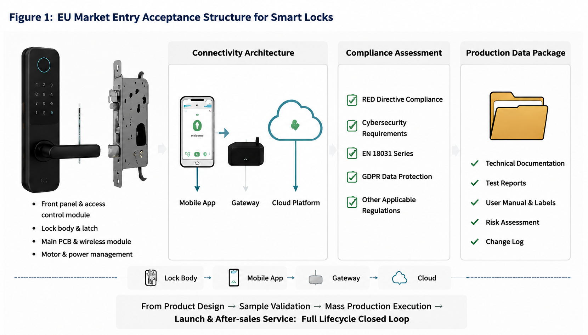
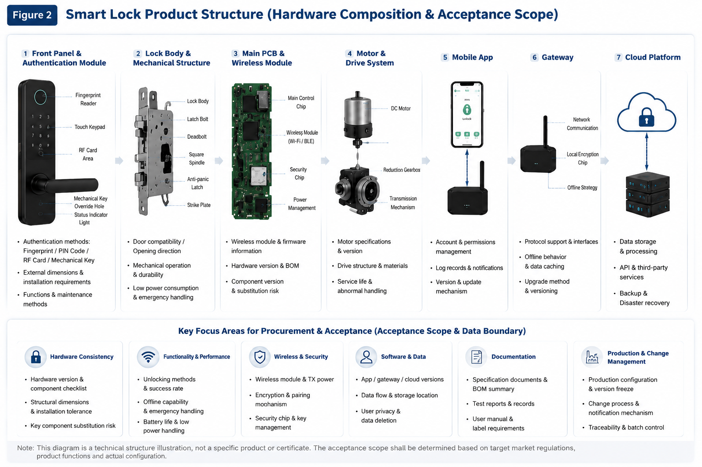
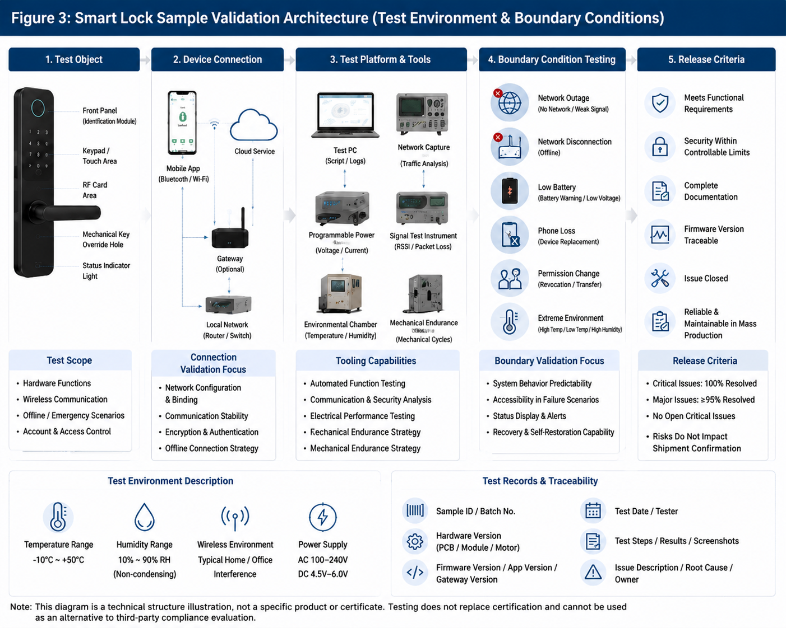
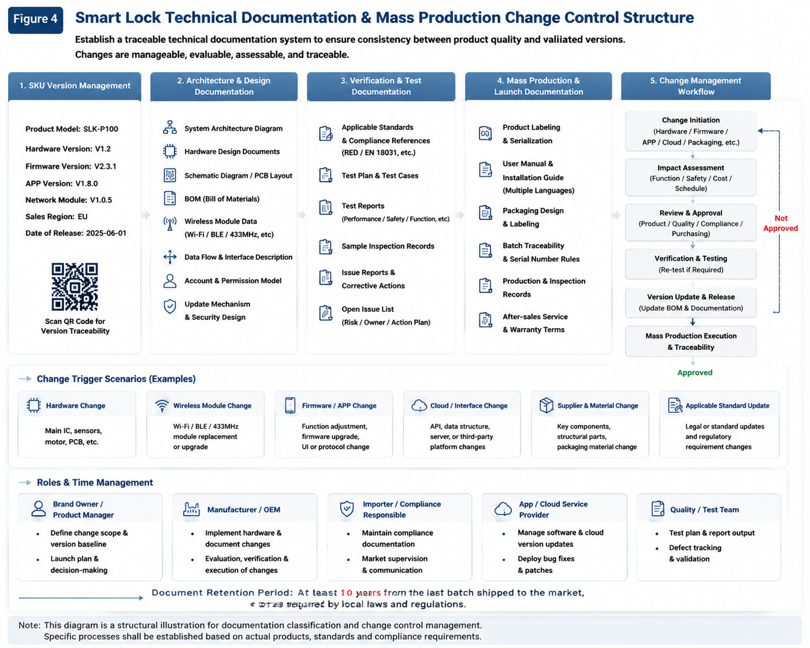
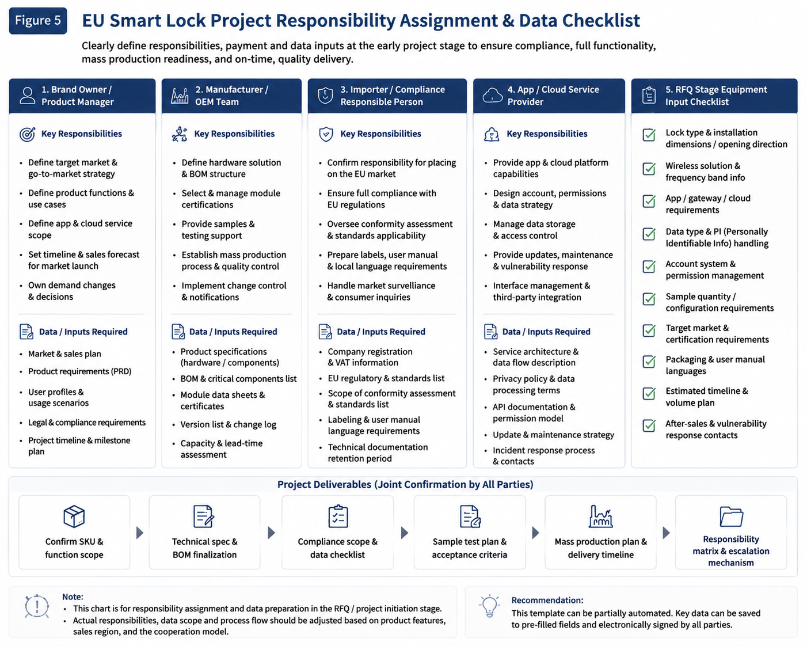

Este artigo destina-se à comunicação técnica durante as fases de aquisição e lançamento do projeto. Não se trata de aconselhamento jurídico ou conclusão de certificação. A adequação de um produto específico, padrões aplicáveis e planos de teste devem ser confirmados em sequência de acordo com o mercado-alvo, funções de rede e sem fio, métodos de processamento de dados e a opinião do organismo de certificação relevante.
Os compradores da UE não analisam mais apenas uma marca CE ou um relatório de teste sem fio antes de fazer um pedido de fechadura inteligente. Para produtos com funções de internet, aplicativos, nuvem ou comunicação sem fio, as equipes de compras precisam colocar arquitetura de produto, segurança de rede, processamento de dados, validação de amostras e alterações na produção em massa na mesma lista de verificação de aceitação. Este guia fornece uma estrutura de trabalho que pode ser usada diretamente para solicitações de cotação, análises de amostras e propostas de projetos OEM/ODM.

Comece dividindo os objetos de aceitação com um diagrama de estrutura
Ao adquirir uma fechadura inteligente para o mercado da UE, primeiro divida o produto completo em objetos de aceitação: painel frontal, corpo e parafuso da fechadura, placa de controle principal, módulo sem fio, motor e caixa de engrenagens, aplicativo móvel, gateway, interface em nuvem, documentação na caixa e versão de produção em massa. Isto não substitui os ensaios laboratoriais. Permite ao comprador identificar, ainda na fase de consulta, quais materiais o fornecedor deve fornecer e quais dúvidas devem ser confirmadas em conjunto pela marca, importador ou provedor de serviços de app/nuvem.

| Objeto de estrutura | Principais pontos de aceitação de compras | Informações do fornecedor necessárias |
|---|---|---|
| Painel frontal e métodos de acesso | Os métodos de impressão digital, PIN, cartão, chave mecânica e acesso de emergência correspondem ao posicionamento do mercado-alvo? | Especificação funcional, dimensões de instalação, versão de aparência, instruções e método de manutenção |
| Corpo da fechadura, parafuso e motor | Compatibilidade com tipo de porta, manuseio, operação mecânica, bateria fraca e comportamento de emergência off-line | Dimensões do corpo da fechadura, versões de componentes-chave, registros de ensaios de amostra e processo de tratamento de exceções |
| Placa principal e módulo sem fio | Método sem fio, versão do módulo, processo de emparelhamento, condições de interferência e dependência de firmware | Informações do módulo, versão do firmware, descrição da interface, registros de teste e mecanismo de notificação de alterações |
| Aplicativo, gateway e nuvem | Permissões de conta, fluxos de dados, mecanismo de atualização, comportamento offline do gateway e limites de serviços de terceiros | Descrição da arquitetura do produto, instruções de processamento de dados, lista de versões e contato de resposta a vulnerabilidades |
Defina primeiro o produto e o escopo regulatório
“Fechadura inteligente” não é uma classificação suficientemente específica para determinar um caminho de conformidade. Os compradores devem primeiro listar o módulo sem fio do SKU alvo, conexão à Internet, funções de aplicativo móvel ou serviço em nuvem, processamento de dados pessoais e quaisquer funções de pagamento ou credencial. O controle local sem fio, os sistemas de contas remotas, a identificação biométrica e a sincronização de dados em nuvem podem levar a diferentes avaliações de risco e requisitos de documentação.
Os requisitos de segurança cibernética sob a Diretiva de Equipamentos de Rádio da UE (RED) surgem de Regulamento Delegado (UE) 2022/30 da Comissão. O regulamento é aplicável às categorias de equipamentos relevantes desde 1 de agosto de 2025. A sua aplicabilidade deve ser confirmada caso a caso pelo organismo de certificação de acordo com as funções do produto, as configurações sem fios e os métodos de processamento de dados. Para equipamentos de rádio conectados, os compradores não devem interpretar o uso de um módulo certificado como prova de que o produto completo atende automaticamente a todos os requisitos. O software do produto, as interfaces, as contas, os métodos de atualização e os cenários de uso reais precisam de confirmação no nível do projeto.
| Formulário do produto | O que deve ser confirmado primeiro quando o projeto for montado? | O que não deve faltar no pacote de compras? |
|---|---|---|
| Controle remoto sem fio local ou bloqueio Bluetooth | Método sem fio, controle de distância, se um telefone configura a rede e se existe uma conta de administração | Versão do hardware, informações do módulo sem fio, processo de emparelhamento e redefinição de fábrica, condições de teste de interferência no local |
| Bloqueio inteligente habilitado para aplicativo ou gateway | Versões e interfaces do app, gateway e corpo da fechadura; comportamento quando a conectividade é perdida | Permissões de conta, comportamento offline do gateway, método de atualização, registros e limites pós-venda |
| Cadeado conectado à nuvem ou integrado a uma plataforma de terceiros | Fluxos de dados, provedores de serviços, APIs, implantação regional e ciclo de vida da conta | Alocação de processamento de dados, registros de alterações de interface, canais de relatório de vulnerabilidades e dados e status de bloqueio após o término do serviço |
Esta tabela não é uma conclusão de classificação regulatória. É uma ferramenta de revisão antecipada que ajuda a evitar a compra de “um cadeado com aplicativo” como se fosse um hardware comum. Quando uma resposta não for clara, marque-a para confirmação antes da cotação, em vez de substituir a decisão do projeto por um compromisso de venda.
Informações necessárias na fase de consulta do projeto
Quanto mais completas as informações iniciais, melhor o fornecedor poderá propor amostras viáveis e caminhos de cotação. A primeira comunicação técnica deverá incluir pelo menos:
- Mercados e canais: países de vendas pretendidos da UE, volumes do primeiro lote e anuais e a divisão de responsabilidade entre a marca e o importador.
- Tipos de fechadura e porta: tipo de fechadura, material da porta, dimensões de instalação, manuseio, plano de acesso de emergência e métodos de desbloqueio necessários.
- Arquitetura de conectividade: Bluetooth, Wi-Fi, 433 MHz ou outros métodos sem fio; e se um gateway, aplicativo, nuvem ou plataforma de terceiros está envolvido.
- Dados e contas: se são coletadas contas, registros de desbloqueio, localização, dados biométricos ou identificadores de dispositivos; quem detém os dados; e as regras de retenção e exclusão exigidas.
- Amostra e plano de entrega: quantidade da amostra, cronograma de entrega estimado, critérios de aceitação, idiomas de embalagem e instrução e expectativas pós-venda.
Como avaliar a segurança cibernética RED e EN 18031
A avaliação da segurança cibernética RED deve começar com a arquitetura real do produto, e não com um nome padrão. A equipe de compras deve mapear funções de rádio, conectividade de rede, contas, fluxos de dados, caminhos de atualização e funções relevantes para fraude e, em seguida, confirmar os requisitos aplicáveis e a rota de avaliação com a parte responsável pela conformidade. A série EN 18031 pode ser relevante para funções específicas do produto, mas a peça específica aplicável e o método de avaliação devem ser determinados para a configuração real.
Para RFQs, utilize questões que poderão ser verificadas posteriormente: qual versão de firmware é avaliada; como as atualizações de segurança são entregues; quem pode criar, remover ou recuperar contas; quais dados são armazenados localmente ou na nuvem; como as vulnerabilidades são relatadas; e o que acontece se o gateway, aplicativo ou serviço em nuvem estiver indisponível? Respostas claras transformam uma afirmação geral de “segurança cibernética” em um registro de projeto passível de revisão.
Aceitação de amostra: transforme funções em verificações repetíveis
Uma amostra deve ser identificada como uma configuração específica, em vez de ser aceita simplesmente porque “as funções funcionam”. Registre o número da amostra, a versão do hardware, a versão do firmware, a versão do aplicativo ou gateway, as condições do teste, os resultados do teste e os problemas em aberto. Isso dá às partes uma base estável para liberação posterior da produção e controle de alterações.

O teste não é equivalente à certificação nem substitui a avaliação de terceiros. O seu valor reside no facto de as equipas de aquisição, I&D, qualidade e pós-venda poderem estabelecer o mesmo registo do que se espera que aceitem antes do início da produção em massa.
Lançamento de produção em massa: quem assina o quê
A chave para a produção em massa não é “a amostra pode ser usada”; é a confirmação de que o produto de produção é consistente com a amostra validada. Antes do primeiro lote de produção, prepare um registro de liberação de no máximo uma página e faça com que seja revisado conjuntamente pelo proprietário da marca e pelo fabricante responsável pela conformidade:
- Congelamento de configuração: liste as versões do corpo da fechadura, módulo sem fio, firmware, aplicativo, gateway e interface de nuvem.
- Loop de amostra fechado: confirmar que os problemas de aceitação foram resolvidos e identificar os riscos, os proprietários e a base de liberação da remessa para quaisquer itens em aberto.
- Documentação consistente: modelos, rótulos, instruções, embalagens, registros de ensaios e documentos técnicos devem referir-se à mesma versão do produto.
- Prontidão pós-venda: estabeleça contatos claros para atualizações, falhas, contas e relatórios de vulnerabilidade para evitar a transmissão repetida de problemas do usuário final entre marcas, fábricas e provedores de serviços.
Documentação técnica e controle de alterações na produção em massa

As informações de conformidade devem permanecer vinculadas de forma rastreável ao produto efetivamente colocado no mercado. Uma revisão de alterações deve ser acionada sempre que o módulo sem fio, firmware, aplicativo, interface de nuvem, provedor de serviços ou pacote for alterado.
- Identificação do produto: modelo, versão, componentes principais e território de vendas.
- Informações de arquitetura: descrição das funções sem fio, rede, contas, fluxos de dados e mecanismos de atualização.
- Informações de verificação: avaliação de padrões aplicáveis, planos de teste, relatórios, registros de aceitação de amostras e questões em aberto.
- Dados de produção em massa: rótulos, instruções, embalagens, registros de alterações, rastreabilidade de lotes e contatos pós-venda.
- Responsabilidades e prazo: marcas, fabricantes, importadores e prestadores de serviços são responsáveis pela manutenção de dados, resposta a problemas e aprovação de atualização.
Em vez de preencher os documentos temporariamente antes do envio, uma abordagem mais eficaz é colocar a certificação, a qualidade e as versões de software sob o mesmo conjunto de limites de alteração quando o projeto é criado. Para equipas de compras que procuram “conformidade de fechadura inteligente da UE”, “exportação de fechadura inteligente para a UE”, “fechadura inteligente de segurança cibernética RED” ou “fechadura inteligente EN 18031”, a resposta mais valiosa do fornecedor não é uma cotação genérica. É uma proposta de projeto que explica a versão de amostra, arquitetura do produto, responsabilidades de dados e limites para alterações na produção em massa.
Os seguintes artigos também podem ser úteis: para uma revisão básica da certificação de exportação, consulte “Práticas de aquisição padrão fechadura inteligente CE, FCC e EN”; para seleção de solução sem fio, consulte “Guia de comparação de protocolo sem fio fechadura inteligente”. Se a equipe de compras também precisar avaliar a capacidade de fabricação e os riscos de fornecimento a longo prazo, consulte “Guia de avaliação técnica da fábrica fechadura inteligente” e “Guia de desenvolvimento do sistema ODM de fechadura invisível”.
Perguntas frequentes sobre aquisição de fechadura inteligente na UE
A certificação do módulo sem fio é suficiente para exportar uma fechadura inteligente para a UE?
Geralmente não. A documentação do módulo sem fio é uma entrada importante para a avaliação do produto completo, mas a configuração real de vendas da fechadura, firmware, aplicativo, gateway, interface de nuvem e permissões de conta podem afetar a conformidade de todo o produto e a avaliação da segurança da rede sob a Diretiva de Equipamentos de Rádio (RED).
A EN 18031 se aplica a todos os fechadura inteligente com um aplicativo?
Nenhum nome padrão deve ser aplicado automaticamente a cada modelo. As equipas de aquisição devem primeiro confirmar se o produto se enquadra nos requisitos relevantes de segurança cibernética da RED e, em seguida, determinar as partes aplicáveis da série EN 18031 e como devem ser aplicadas de acordo com as suas funções de rádio, rede, processamento de dados e antifraude.
Que informações devem ser revisadas durante a aceitação da amostra de fechadura inteligente da UE?
Revise juntos o identificador da amostra, as versões de hardware e firmware, a versão do aplicativo ou gateway, o comportamento sem fio e offline, as permissões da conta, o mecanismo de atualização, os rótulos, as instruções, a versão do pacote, os registros de teste e o processo de controle de alterações de produção em massa.
Qual é o papel de um diagrama de estrutura de fechadura inteligente num inquérito de projeto da UE?
O diagrama de estrutura ajuda o comprador a dividir o painel frontal, o corpo da fechadura, a placa de controle principal, o módulo sem fio, o motor, o aplicativo, o gateway e o limite da nuvem em objetos revisáveis. Portanto, esclarece quais elementos precisam de cobertura na validação de amostras, documentação técnica e registros de alterações de produção em massa.
O que deve ser declarado num inquérito de projeto da UE a uma fábrica de fechaduras inteligentes?
Indique o país de destino, tipo de fechadura e porta, método sem fio, se é necessário um aplicativo ou nuvem, dados e requisitos de conta, quantidade de amostra, cronograma estimado de entrega, embalagem e idioma de instrução e a divisão de responsabilidades entre a marca, importador e prestadores de serviços.
Solicite uma análise de conformidade e cotação de projeto
Informe à WAFU o país de destino, tipo de bloqueio, método sem fio, se é necessário um aplicativo ou nuvem, cronograma de entrega estimado e quantidade de amostra. Podemos ajudar a definir a configuração do produto, o caminho de validação da amostra e o escopo OEM/ODM de acordo. A aplicabilidade da certificação e do plano de ensaios final permanece sujeita ao produto alvo e ao parecer de entidades profissionais qualificadas.

As figuras citadas neste artigo são apresentadas como ilustrações textuais devido a restrições de formatação.
Procure produtos fechadura inteligenteEnviar requisitos do projeto